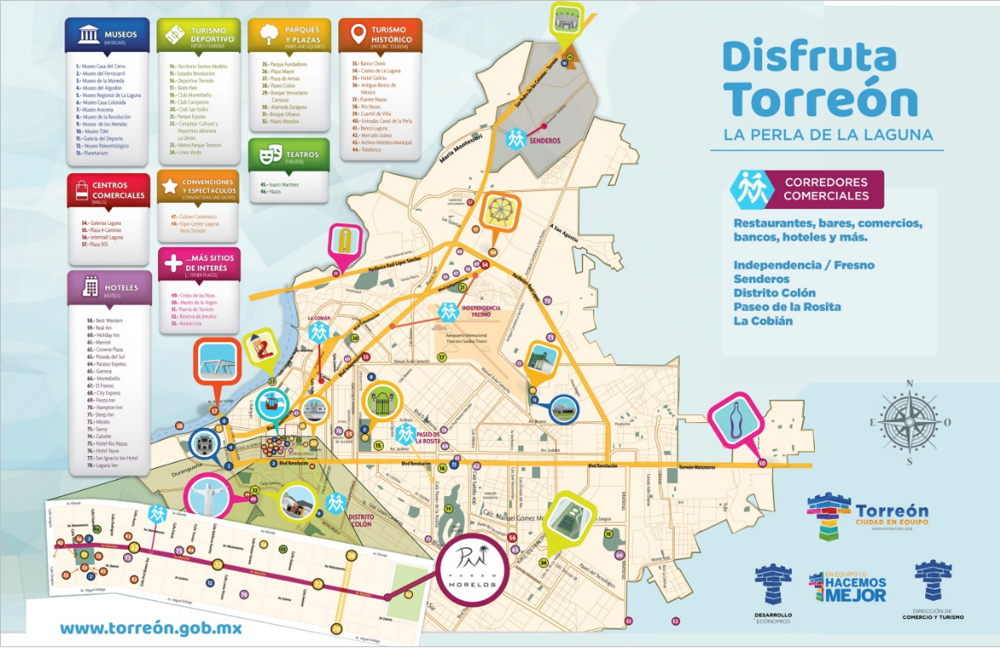

Torreón, conocida también como la “Ciudad de los grandes esfuerzos” fue declarada ciudad el 15 de Septiembre de 1907 y a pesar de que es considerada una de las ciudades más jóvenes del país, se ha convertido en un importante centro industrial, comercial, agrícola y ganadero, impulsado por su población conformada por etnias de todo el mundo.
Se denomina destino turístico a una zona o área geográfica ubicada en un lugar lejano y que es visitada por el turista, cuenta con límites de naturaleza física, de contexto político y de percepción por parte del mercado. Desde el punto de vista empresarial, tanto estratégico como organizativo, el perímetro del destino lo constituyen las relaciones que se edifican entre el conjunto de unidades productivas que participan en la actividad turística.
El pasado 27 de Septiembre se conmemoró el Día Mundial del Turismo, la principal finalidad de esta fecha es la de fomentar el conocimiento entre la comunidad local e internacional sobre la importancia del turismo, resaltando sus valores sociales, culturales, políticos y económicos.
En ese aspecto, Torreón se caracteriza por el crecimiento y esfuerzo de su gente, hace que su hospitalidad e historia inviten a quienes no la conocen a adentrarse en esta maravillosa región.
De acuerdo al Censo de 2015 del Instituto Nacional de Estadística y Geografía (INEGI), la Ciudad cuenta con una población de 679, 288 habitantes.
Forma parte de la Zona metropolitana de La Laguna (ZML), conformada por los municipios de Torreón, Gómez Palacio, Ciudad Lerdo y Matamoros, con una población mayor de 1´283, 564 habitantes lo que la convierte en la novena área urbana más grande de México.
También cuenta con una amplia oferta de productos y servicios, por lo que se ha posicionado como una ciudad ideal para la planeación y ejecución de grandes eventos. Su conectividad, capacidad hotelera, infraestructura, gastronomía, entre muchos otros factores; hacen exitosos todos los eventos que se lleven a cabo.
Los visitantes pueden disfrutar de sus atractivos turísticos como El Cristo de las Noas, El Tranvía, el Teleférico, además de Museos, Centros Comerciales, Espacios Deportivos, Parques y Plazas, Teatros o simplemente una caminata nocturna por el Paseo Morelos.
El reto, que se reconozca a Torreón y a La Laguna no como una ciudad o región solamente, sino como un Destino Turístico, lo cual implica invertir más en su mejoramiento y conservación, para poder obtener los beneficios deseados.
Respecto a la ocupación hotelera, hasta el mes de agosto del 2017 se obtuvo un 53.59%, mientras que, para agosto de este año, se situó en un 57.22% el registro de visitantes en Torreón.
Otra de las metas que tienen los involucrados en el desarrollo y crecimiento de la ciudad, es trabajar en conjunto con otras dependencias, para posicionar a la ciudad entre las zonas más importantes del país, ya que se cuenta con distintas áreas de recreación y descanso, además que es un área geográfica importante para las empresas que deciden instalarse aquí.
La laguna, es considerada el 3er. lugar en productividad en ciudades con más de 1 millón de habitantes, de acuerdo al índice de competitividad urbana 2016 del Instituto Mexicano para la Competitividad A.C. (IMCO).
Sin duda alguna, la ciudad lagunera brinda un gran número de atractivos a los turistas, ya que con información de la Dirección de Comercio y Turismo de Torreón, se cuentan con 14 Museos, 21 en toda la laguna, 4 Centros Comerciales, 10 Centros Deportivos, 2 Centros de Convenciones y Espectáculos, más de 10 sitios de Turismo Histórico, 2 Teatros, Monumentos, Reservas y un Aviario.
En cuanto a la oferta educativa, existen 752 escuelas en Torreón y 1,318 escuelas en La Laguna, 45 Universidades en Torreón y 66 universidades en La Laguna.
Además, se cuenta con un registro de 74 hoteles con 2,438 habitaciones, de los cuales 68.37% son de 4 y 5 estrellas; así como 722 parques y plazas.
Todos unidos por un mismo objetivo, como lo es, ofrecer a los habitantes de la Comarca Lagunera y sus alrededores distintas opciones para despejarse y disfrutar en compañía de familia y amigos.
